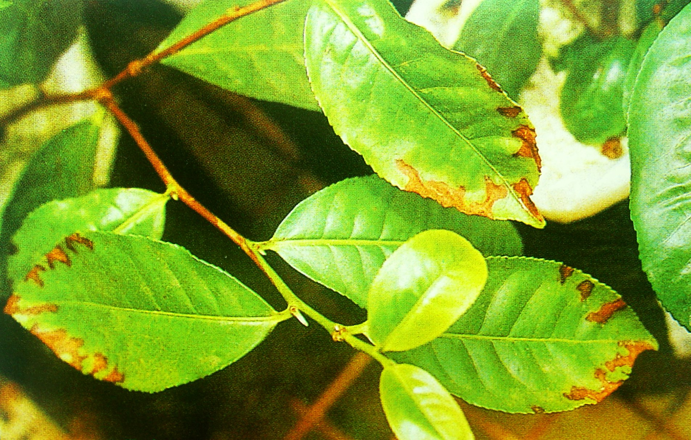
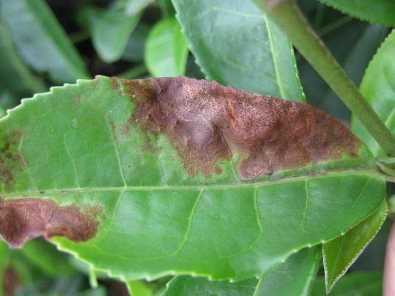

茶云纹叶枯病是由茶赤叶枯刺盘孢菌、山茶球腔菌引起的、 发生在茶的病害。主要危害成叶，但枝梢及果实也会受害。叶片被害后多在叶缘或叶尖开始发病， 叶片中部组织也会受害。初期病斑呈黄绿色水渍状，逐渐扩展成为半圆形、近圆形或不规则形的褐色大斑；后期，病斑表面产生许多黑色小粒点，散生或略作轮状排列。
茶云纹叶枯病是茶园中最常见的一种叶部病害，分布很广， 在中国各茶区均有发生。罹病叶片提早脱落，枝梢回枯，促使树势衰弱， 产量下降，严重时，茶园呈现一片枯褐色，幼龄茶树可出现全株枯死。
防治茶云纹叶枯病以农业防治和药剂防治为主，使用无病种子和较抗（耐）病品种。 在加强栽培管理，提高植株抗性的基础上，采用生长期喷药保护为重点的综合防治措施。
茶云纹叶枯病主要危害成叶，但茶树其他部位，如新梢、枝条和果实也可被感染。
叶片病状：成叶和老叶上的病斑多在叶缘或叶尖发生，初呈黄褐色，水渍状半圆形或淡绿色的圆形病斑逐渐呈散射状扩展。色泽呈暗褐色或赤褐色， 1周后病斑由里向外变灰白色，组织枯死，边缘黄绿色，形成灰色、暗褐色和赤褐色相间的不规则斑块，形似云纹状波纹，故名云纹叶枯病。 后期病斑上产生扁圆形灰黑色的小粒点，即病菌的子实体（孢子堆常呈肉红色，在病斑上成不规则状或轮状排列）。 病斑背面黄褐色，病斑可蔓及全叶，最后干枯脱落，从症状初现到落叶历时25-50天。嫩叶上的病斑初为圆形褐色，后变黑褐色枯死。
枝条及果实病状：枝条染病产生灰褐色斑块，椭圆形略凹陷，生有灰黑色小粒点，常造成枝梢干枯。 果实染病病斑黄褐色或灰色，圆形，上生灰黑色小粒点，病部有时裂开。 茶树衰弱时多产生小型病斑，不整形，灰白色，正面散生黑色小点。
茶云纹叶枯病病菌以菌丝体或分生孢子盘在树上病组织或土表落叶中越冬，成为翌春的初次侵染源。此外，病菌也可在土层5厘米处的落叶中越冬， 但病菌在土内落叶中的越冬后存活力决定于病叶的腐烂程度。在自然条件下，有性世代较少出现，仅在初夏以及秋季多雨的潮湿条件下在“回枯”的枝梢上出现较多， 因此病菌在侵染循环中以无性世代起主要作用。病菌对低温抵抗力强，因此在冬季没有明显冰冻的中国南方，没有明显的越冬现象
病菌越冬后，翌年春季，在潮湿条件下病斑上形成分生孢子，由于分生孢子产生于黏质的分生孢子盘中，主要依靠雨水传播。病菌借雨水和露滴在茶树上由上往下传播。 孢子不能单凭风力传播，风雨结合才能促进病害的蔓延。 当分生孢子溅落在茶树叶片或其他组织上时，遇水滴萌芽后长出芽管，并形成附着器，凭借机械压力直接穿透寄主表皮，或通过伤口侵入，并在细胞间蔓延扩展，形成新病斑。
茶云纹叶枯病是一种高温高湿型病害，高温可促进病菌的生长繁殖，潜育期也较短；高湿多雨有利于孢子的产生、萌芽、 附着胞的形成以及病害的传播，但在高温干旱时病害发展很慢。当旬平均气温≥28℃，降雨量＞40毫米， 平均相对湿度过80%，在有一定菌源数量和感病的寄主植物时，病害往往流行。全年除严寒外，均能发病，以高湿季节8月下旬至9月上旬为发病盛期。
该病的发生与土壤理化性状及土层深浅均有密切关系。黏土发病较重，土层浅的发病重。 茶树生长最适的土壤酸碱度为pH4.5-6.5，过高过低均不利于根系的正常生育，从而促使发病加重。
茶树不同品种间的抗病性强弱有明显差异。一般大叶种比小叶种发病重。 抗病品种有清明早，瑞安白毛茶、藤茶、梅茶、梅占、龙井群体种，福鼎白毫、铁观音等品种； 高度感病的品种有福建水仙、广东水仙、云南大叶种、湘波绿、广西大苗山等品种。
茶云纹叶枯病的发生和茶树生长状况密切相关。由于该病的病原菌是一种兼性腐生菌，凡茶树树势健壮，抗病性强，发病也轻， 相反茶树生长衰弱，发病也较重。地下水位高，排水不良，土壤贫瘠，土层较浅的茶园，由于对茶树根系的生长发育不利，故发病较重。 采摘过度、遭受冻害、虫害等致使树势衰弱，均有利于发病。台刈、密植茶园及扦插苗圃，发病也较重。
因地制宜选用抗病品种；加强茶园管理，多施基肥和茶叶专用肥，注意氮、磷、钾的配合，促使茶树生长健壮； 注意深耕培土，做好抗旱与防冻及防虫工作，减轻病害的发生；秋茶采完后及时清除地面落叶并进行冬耕，把病叶埋入土中，以减少翌年侵染来源。
当成叶发病率10-15%，达到防治指标时，进行喷药防控。药剂可选用10%苯醚甲环唑水分散粒剂1500-2000倍液（安全间隔期7天）， 75%百菌清可湿性粉剂800-1000倍液（安全间隔期10天），70%甲基硫菌灵可湿性粉剂1000-1500倍液（安全间隔期10天）。 非采摘茶园可使用0.7%石灰半量式波尔多液进行防控。